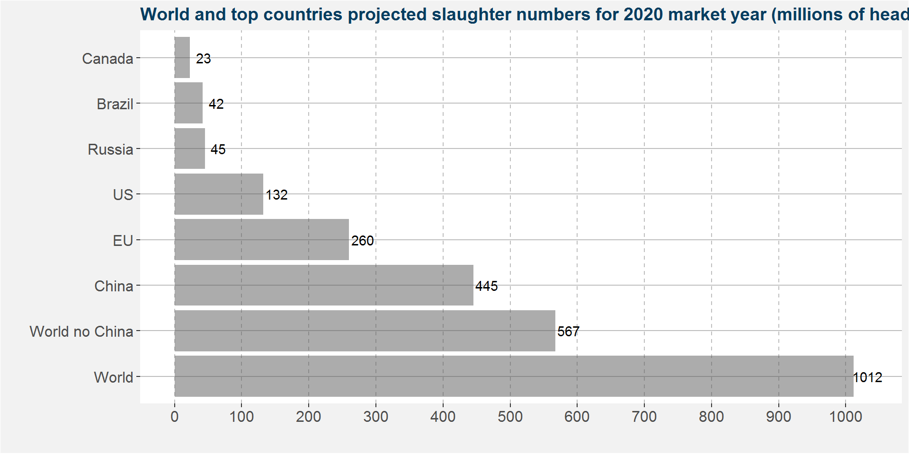
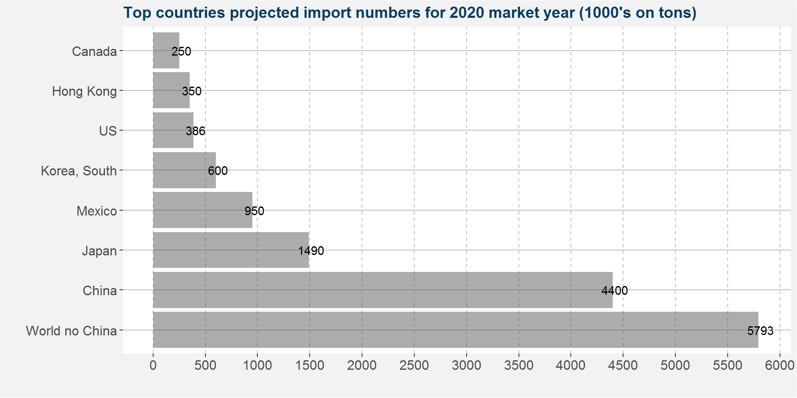
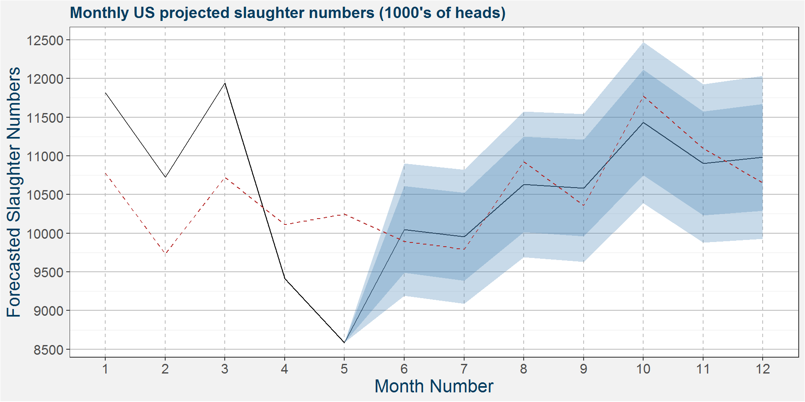
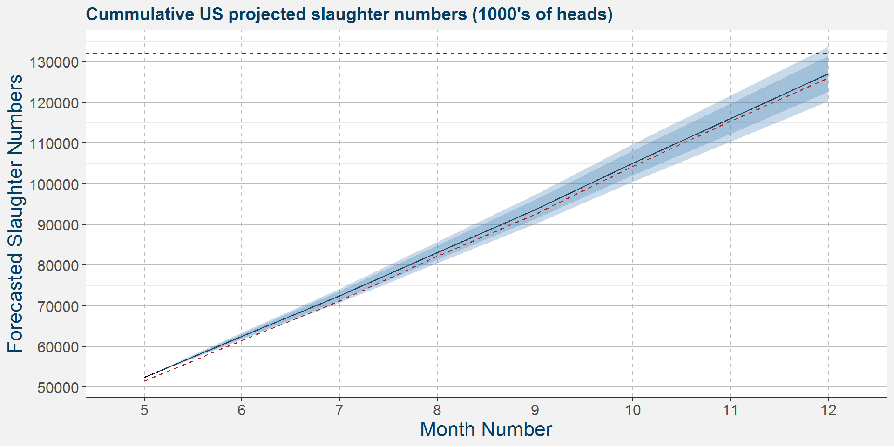
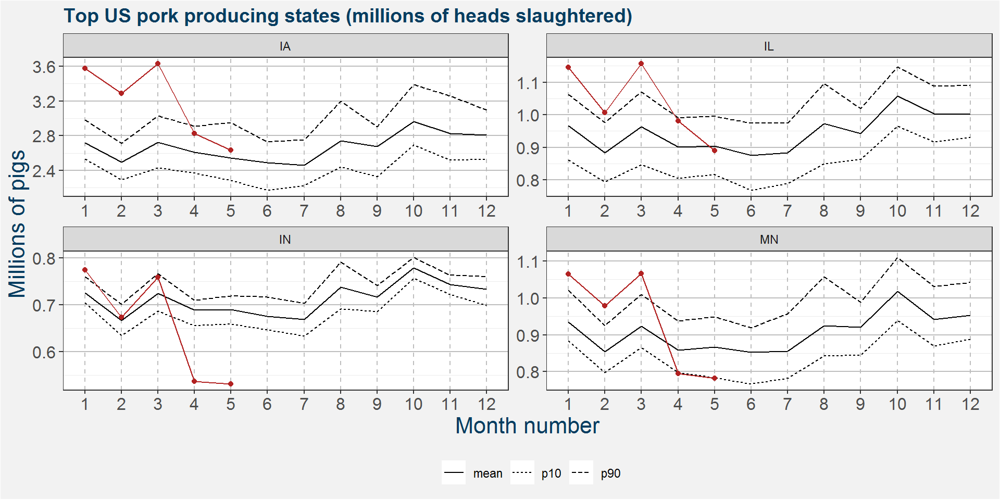
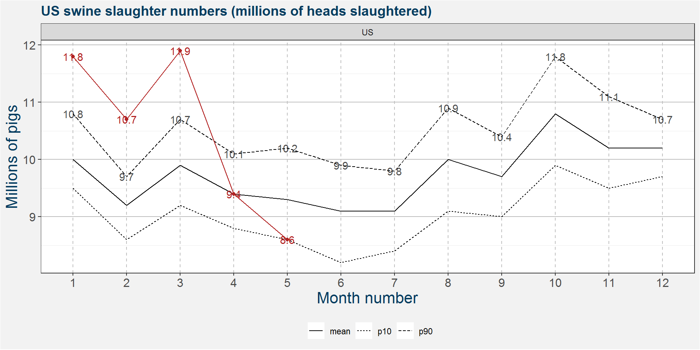
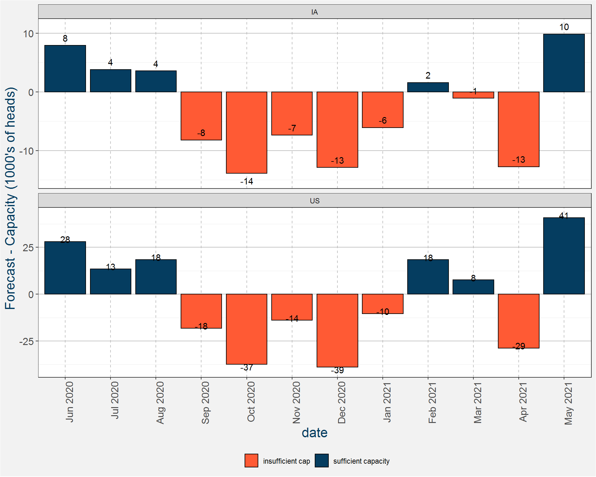

Chapter 3 Meats and Livestock
3.1 Global Pork Market
The global forcasted pork slaughter numbers are summarized in the plot below. China amounts to half of the global slaughter number. The EU slaughters abouth half of China's number and the US is half of the EU. Russian and Brazillian numbers are next, but don't even combine the reach the US slaughter numbers.

The largest importers of pork meet is shown in the plot below, units are in 1000's of tons. It is clear that the Asian markets and Mexico have an appitite for pork. US trade relations with the East and Mexico are key for the pork market.

3.2 Balance Sheets
The table below shows the US swine animal numbers balance sheet. These numbers are shown in units of 1000's of heads. Notice the increase in projected slaughter numbers from 2019 to 2020. This amounts to an increase of 1.69%. Notice that the US have to slaughter around 11 million heads of swine every month to meet these projected slaughter numbers.
| Attribute_Description | 2016 | 2017 | 2018 | 2019 | 2020 |
|---|---|---|---|---|---|
| Beginning Stocks | 68919 | 71545 | 73145.00 | 75070.00 | 79048.00 |
| Sow Beginning Stocks | 6002 | 6110 | 6179.00 | 6326.00 | 6471.00 |
| Production | 125936 | 129467 | 133518.00 | 140191.00 | 139652.00 |
| Imports | 5656 | 5600 | 5250.00 | 5096.00 | 4916.00 |
| Total Supply | 200511 | 206612 | 211913.00 | 220357.00 | 223616.00 |
| Total Slaughter | 118220 | 121317 | 124435.00 | 129913.00 | 132103.00 |
| Sow Slaughter | 2905 | 2971 | 3032.00 | 3198.00 | 3240.00 |
| Exports | 48 | 59 | 64.00 | 60.00 | 44.00 |
| Loss | 10718 | 11791 | NA | NA | NA |
| Total Distribution | 200511 | 206612 | 211913.00 | 220357.00 | 223616.00 |
| Ending Stocks | 71525 | 73445 | 74915.00 | 79048.00 | 78400.00 |
| Annual % Change Prod. To Sows | 3 | 1 | 2.03 | 3.31 | -2.62 |
The plot below shows the monthly projected slaughter numbers. The dark and light shaded regions represent 80 and 95 percent confidence intervals. The dashed red line shows the 90th percentile of monthly US slaughter numbers. Notice that the mean projected slaughter numbers are all well above the percentile reference.

Another way to view this data is cummulatively. The plot below shows the cummulative projected slaughter numbers up to December. The horizontal dashed lines shows the US projected slaughter numbers. Similar to above the dashed red line gives the 90th percentile. Notice that the mean projection will only barely reach the target set by the USDA. To be safe they will have to reach slaughter numbers greater than the top marker of the 80% confidence band.

The swine meat balance sheet for the US in shown in the table below. Here the units are in 1000's on tons. The increase in meat production from 2019 to 2020 is 3.24%. To achieve these production numbers the US requires sufficient capacity to slaughter all the required hogs.
| Attribute_Description | 2016 | 2017 | 2018 | 2019 | 2020 |
|---|---|---|---|---|---|
| Beginning Stocks | 267.00 | 230.00 | 251.00 | 254.00 | 293.00 |
| Production | 11320.00 | 11611.00 | 11943.00 | 12543.00 | 12950.00 |
| Imports | 495.00 | 506.00 | 473.00 | 429.00 | 386.00 |
| Total Supply | 12082.00 | 12347.00 | 12667.00 | 13226.00 | 13629.00 |
| Domestic Consumption | 9475.00 | 9540.00 | 9748.00 | 10066.00 | 9974.00 |
| Exports | 2377.00 | 2556.00 | 2665.00 | 2867.00 | 3412.00 |
| Total Distribution | 12082.00 | 12347.00 | 12667.00 | 13226.00 | 13629.00 |
| Ending Stocks | 230.00 | 251.00 | 254.00 | 293.00 | 243.00 |
| s2u | 1.94 | 2.08 | 2.05 | 2.27 | 1.82 |
| Annual % Change Per Cap. Cons. | 1.00 | 0.00 | 1.40 | 3.10 | -2.00 |
3.3 Monthly hog slaugter numbers
Below we show the monthly hog slaughter numbers for the top producing states reported in the latest NASS dataset. Data for the current year is shown in red. The mean slaughter numbers are represented by the solid black line. The dashed and dotted line show the 90th and 10th percentiles respectively. Notice the large decreases duing the onset of the Corona Virus Crisis in the United States.

The plot below is the same as those above but shows the data on a US wide level. Here the rounded values are also shown on the graph in millions of heads. We can see that the current pace of port production will not be able to reach the goal set by the USDA.

3.4 Slaughtering Capacity
The table below shows the total slaughtering capacity of each state. The capacity and old columns show the fall 2018 and fall 2019 capacities respectively. This data was scraped of the pork.org website and is measured in heads of swine on a daily slaughtering basis. Iowa and Michigan will have the largest increases in plant capacity.
| state_alpha | type | capacity | old | change |
|---|---|---|---|---|
| US | normal | 506470 | 494535 | 11935 |
| IA | normal | 152300 | 142300 | 10000 |
| NC | normal | 48250 | 48400 | -150 |
| IL | normal | 48200 | 47300 | 900 |
| MN | normal | 45100 | 45100 | 0 |
| IN | normal | 33800 | 33800 | 0 |
| MO | normal | 32000 | 32000 | 0 |
| NE | normal | 29125 | 28950 | 175 |
| OK | normal | 20500 | 20500 | 0 |
| SD | normal | 19500 | 19500 | 0 |
| PA | normal | 14550 | 15050 | -500 |
| MI | normal | 12500 | 12500 | 0 |
| CA | normal | 12150 | 10800 | 1350 |
| KY | normal | 10900 | 10900 | 0 |
| VA | normal | 10490 | 10490 | 0 |
| OH | normal | 5150 | 5250 | -100 |
| TN | normal | 3950 | 3950 | 0 |
| WI | normal | 3000 | 2750 | 250 |
| TX | normal | 1700 | 1700 | 0 |
| OR | normal | 1075 | 1075 | 0 |
| KS | normal | 1000 | 1000 | 0 |
| ID | normal | 730 | 720 | 10 |
| AL | normal | 300 | 300 | 0 |
| NJ | normal | 200 | 200 | 0 |
| state_alpha | type | capacity | old | change |
|---|---|---|---|---|
| US | sow | 17440 | 16690 | 750 |
| IA | sow | 4000 | 4000 | 0 |
| TN | sow | 3950 | 3950 | 0 |
| WI | sow | 3000 | 2750 | 250 |
| IL | sow | 2250 | 2250 | 0 |
| MI | sow | 1000 | 500 | 500 |
| KS | sow | 1000 | 1000 | 0 |
| OH | sow | 950 | 950 | 0 |
| KY | sow | 900 | 900 | 0 |
| AL | sow | 300 | 300 | 0 |
| VA | sow | 90 | 90 | 0 |
Below we show a google map view of where the plants are located. The radius of the marker corresonds to the plant capacity. Zooming in around the main markers we can see that the majority of the pork processing plants are located around the Des Moines area in Iowa. Clicking on the marker gives somemore information about the specific plant and its capacity. Plants with increasing capacities are shown in green. The remainder of the plants are shown in blue.
Studying the plot above we might ask if it is good practice to think of the US pork industry on a state or country wide basis. It is clear that the majority of the pork paking facilities are located around Iowa. There are two islands outside the main area, one in Oklahoma and the other in North Carolina. It is interesting to note that the West Coast don't have great packing capacity.
The plot below shows the difference in available capacity and the daily slaughter point forecast. A positive (negative) number implies sufficient (insufficient) capacity and is indicated as a blue (orange) coloured bar. It is clear that Iowa is going to have capacity constraints going into October. These capacity constraints will be felt in the total US numbers from September 2019 through to January 2020. Throughout we use the top bar of the 80% confidence band because this gives a cummulative slaughter number that equates with the projected slaughter numbers of the USDA.

3.5 Implications
In the United States we have seen many processing fascilities operating at half capacity due to the Corona Virus Crisis. This has further reduced the meat packing capacities and have increased the meat packing margins to astronomical levels. The reduced packing ability has forced the lean hog prices down even though meat prices in the supermarkets are trading at elevated levels due to people buing bulk to weather out the Corona Virus Storm. The reason for this is that a larger number of farmers are competing with each other to get their product to the processing fascilities. The processing fascilities can then just take the cheapest carcasses. This created a downward spiral in the lean hog price.